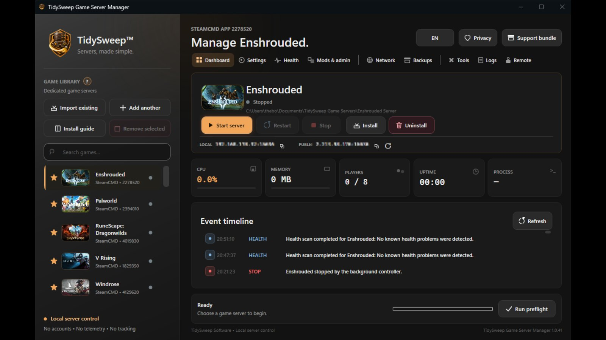
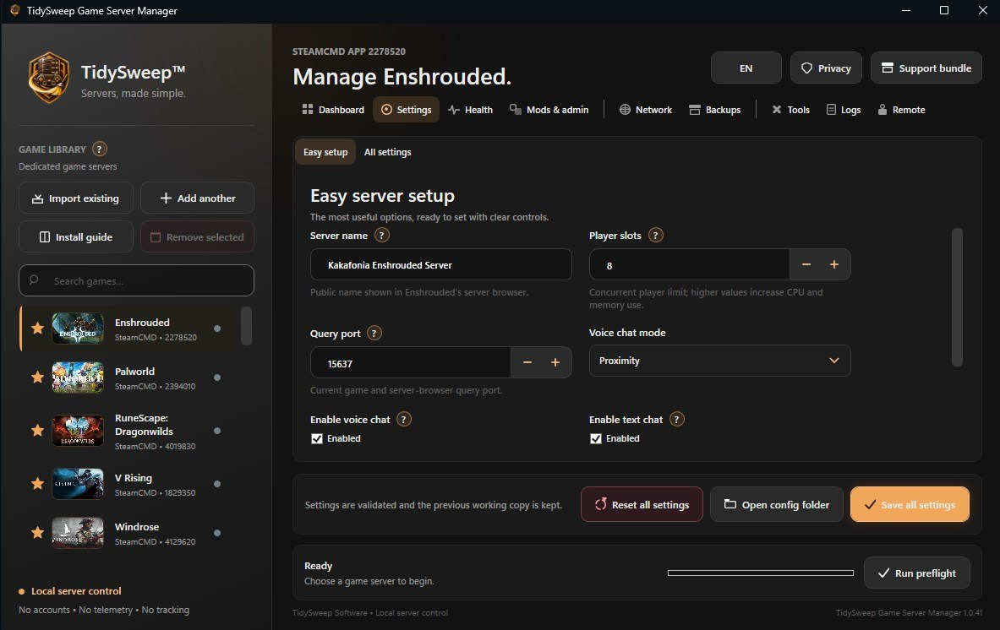
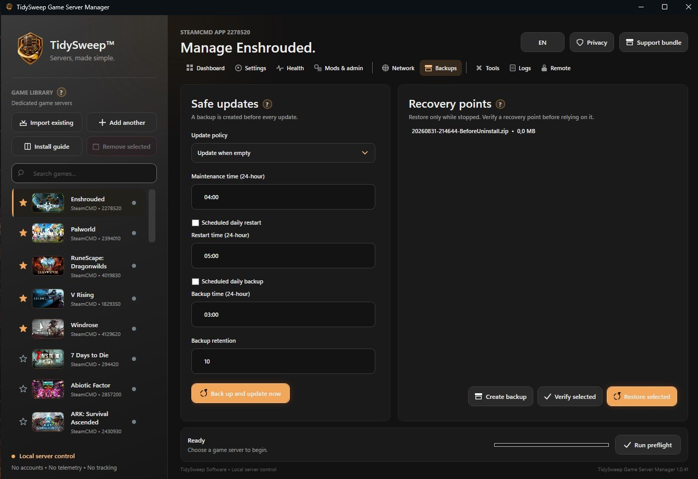
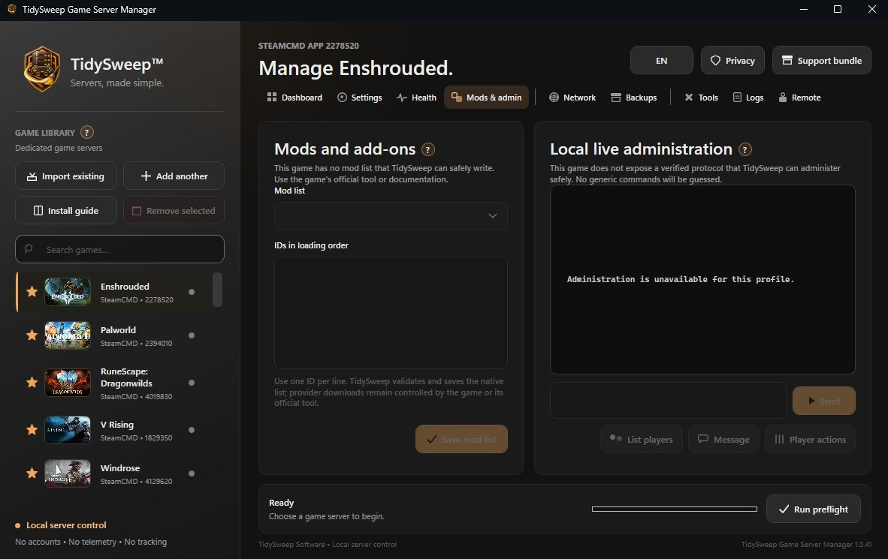
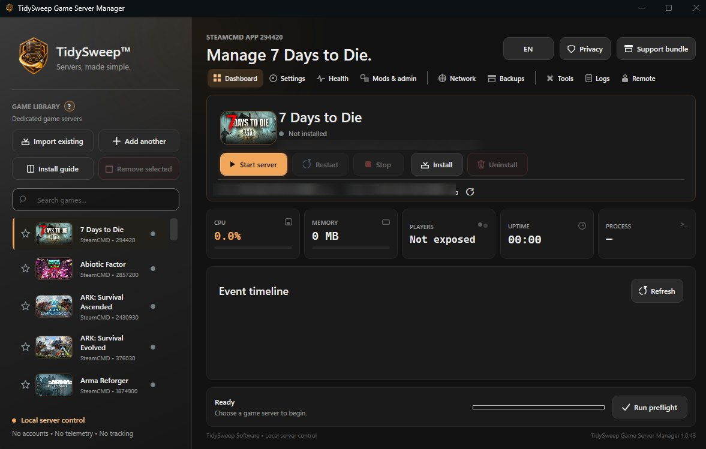

Run your own game servers without juggling scripts, configuration files, ports and backup folders. A clear control center gives every supported game an installation guide, safe updates, live health, crash recovery, schedules, firewall help, logs and backups.

Running a dedicated server for your friends or your community usually means scripts, command lines, configuration files, port numbers and backup folders. Game Server Manager puts all of that into one clear Windows app.
Pick a game from the 32 supported, follow the guided install and start your server. The manager then watches over it: it shows its health, brings it back after a crash, restarts it on a schedule, keeps backups and updates it safely.
Everything stays on your PC and under your control. There is no account, no ads and no tracking, and server passwords are kept in Windows Credential Manager.
Search the 32 supported games and pick the one you want to host.
The game's official installation steps are followed and checked for you, with SteamCMD handled by the app.
Name, password, players, world and game rules, with help text for every setting.
Start the server and copy the address, port or invite code for your friends. Firewall and router help is included.
Schedules, backups, safe updates and crash recovery keep it running while you play.
See every server at a glance: running or stopped, CPU, memory, players and uptime. Start, restart and stop with one click, and read the event timeline to see what happened while you were away.
You can run several separate servers of the same game side by side, each with its own settings and saves.

Common settings are on one easy page. Every advanced option the game offers is there too, and each checkbox explains what it does in plain words.

Before every update the manager makes a backup, so you can always go back. Keep as many recovery points as you like, restore one in a click, import saves and export a game save to a ZIP.

Manage mods and add-ons for the games that support them, and run admin commands on a live server.
A separate background controller on your PC keeps your servers running when the manager window is closed. Daily restarts, backups and update policies run on their own.
If an install fails, a window explains the cause in plain words, keeps the logs and can repair SteamCMD in one click.
Click a picture to see it big.

7 Days to Die, ARK, Conan Exiles, Counter-Strike 2, Enshrouded, Minecraft, Palworld, Rust, Valheim, Windrose and more.
Each game's official installation steps, checked as you go.
Run separate, isolated servers side by side.
CPU, memory, players and uptime at a glance, with low overhead.
A backup before every update, recovery points, restores and save export to ZIP.
Daily restarts, backups and update policies that run on their own.
Copyable addresses and ports, plus Windows Firewall and router guidance.
No account, no ads, no telemetry; passwords are kept in Windows Credential Manager.
A separate local background controller keeps your servers running even when the manager window is closed. Your servers stay under your control.
Supported games: 7 Days to Die, Abiotic Factor, ARK: Survival Ascended, ARK: Survival Evolved, Arma Reforger, Assetto Corsa EVO, Conan Exiles, Core Keeper, Counter-Strike 2, DayZ, Enshrouded, Euro Truck Simulator 2, Farming Simulator 25, Garry's Mod, Insurgency: Sandstorm, Killing Floor 2, Left 4 Dead 2, Minecraft: Java Edition, Palworld, Project Zomboid, RuneScape: Dragonwilds, Rust, Satisfactory, Sons of the Forest, Space Engineers, Squad, StarRupture, Team Fortress 2, Unturned, Valheim, V Rising and Windrose.
Game names, artwork and trademarks belong to their owners. TidySweep Game Server Manager is an independent tool and is not endorsed by the game publishers.
7 Days to Die, Abiotic Factor, ARK: Survival Ascended, ARK: Survival Evolved, Arma Reforger, Assetto Corsa EVO, Conan Exiles, Core Keeper, Counter-Strike 2, DayZ, Enshrouded, Euro Truck Simulator 2, Farming Simulator 25, Garry's Mod, Insurgency: Sandstorm, Killing Floor 2, Left 4 Dead 2, Minecraft: Java Edition, Palworld, Project Zomboid, RuneScape: Dragonwilds, Rust, Satisfactory, Sons of the Forest, Space Engineers, Squad, StarRupture, Team Fortress 2, Unturned, Valheim, V Rising and Windrose.
Yes. The manager shows your local and public addresses and ports to copy, and gives Windows Firewall and router port help for each game.
No. A background controller keeps them running when the window is closed.
Server passwords are stored in Windows Credential Manager, not in plain text files.
A backup is made before every update, so you can restore the world from before it.